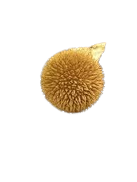
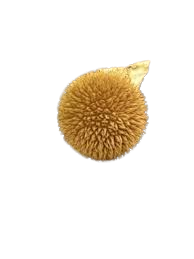

Descripción morfológica
Lycoperdon echinatum, conocido como "pedo de lobo erizado", es un hongo gasteromicete de la familia Agaricaceae que se distingue por su superficie cubierta de espinas cónicas prominentes. Los cuerpos fructíferos son globosos a piriformes (2-6 cm de diámetro), inicialmente blancos pero volviéndose marrón oscuro en la madurez. Las espinas (hasta 5 mm de largo) son al principio blanquecinas, luego marrón rojizas, y finalmente caen revelando un endoperidio reticulado. La gleba joven es blanca y firme, transformándose en polvo esporal oliváceo.
Características únicas
- Espinas: Estructuras piramidales agrupadas que le dan aspecto "erizado".
- Endoperidio: Capa interna con patrón reticulado visible al caer las espinas.
- Esporas: Globosas, verrugosas, 3.5-5 µm de diámetro con pedicelo corto.
- Base: Estrecha con rizomorfos blancos visibles en ejemplares jóvenes.
Distribución y hábitat
Especie poco común pero ampliamente distribuida en bosques templados de Europa, América del Norte y partes de Asia. Crece en suelos ricos en humus de bosques de hayas (Fagus) y robles (Quercus), ocasionalmente bajo coníferas. Prefiere lugares sombríos con alta humedad y suelos calcáreos. Fructifica desde finales de verano hasta otoño (agosto-octubre en el hemisferio norte), a menudo en pequeños grupos.
Condiciones ecológicas
- Sustrato: Suelos con abundante materia orgánica en descomposición.
- Asociaciones: Posible relación micorrícica con árboles caducifolios.
- Microclima: Requiere humedad constante y protección del sol directo.
Ciclo de vida y estrategia reproductiva
El micelio subterráneo forma cuerpos fructíferos que emergen como esferas blancas cubiertas de espinas. Al madurar, las espinas se desprenden y se desarrolla un poro apical por donde escapan las esporas cuando el hongo es golpeado por gotas de lluvia ("dispersión por salpicadura"). Las esporas germinan en suelos ricos en calcio, completando un ciclo anual. La gleba cambia de blanco a amarillo-oliváceo antes de volverse polvorienta.
Etapas de desarrollo
- Fase de huevo: Estructura subterránea blanca con espinas incipientes.
- Emergencia: El cuerpo fructífero aparece en superficie con espinas completamente desarrolladas.
- Maduración: Las espinas caen y la gleba se licúa para liberar esporas.
Importancia ecológica
- 🌱 Reciclaje: Participa en la descomposición de materia orgánica forestal.
- 🐜 Interacciones: Las espinas pueden disuadir a pequeños herbívoros.
- 🔬 Ciencia: Modelo para estudios de dispersión esporal por impacto.
Datos fascinantes
- Historia: Primeramente descrito por Christian Hendrik Persoon en 1801.
- Defensa: Las espinas contienen metabolitos secundarios que inhiben bacterias.
- Variabilidad: El número y tamaño de espinas varía según condiciones ambientales.
- Confusiones: Juveniles pueden parecer erizos (Hydnum) a simple vista.
Conservación y observación
Especie sensible a cambios en su hábitat:
- Evitar recolección (fotografiar in situ dada su rareza).
- Proteger bosques maduros con suelo no perturbado.
- Documentar avistamientos para estudios de distribución.
Técnicas de búsqueda
- Examinar cuidadosamente el suelo en bosques de hayas antiguos.
- Buscar durante mañanas húmedas tras lluvias otoñales.
- Usar lupa para apreciar la estructura de las espinas.
Diferencias con especies similares
- Lycoperdon perlatum: Tiene verrugas en lugar de espinas largas.
- Lycoperdon mammiforme: Superficie inicialmente lisa que se agrieta.
- Lycoperdon nigrescens: Espinas negruzcas y distribución más norteña.